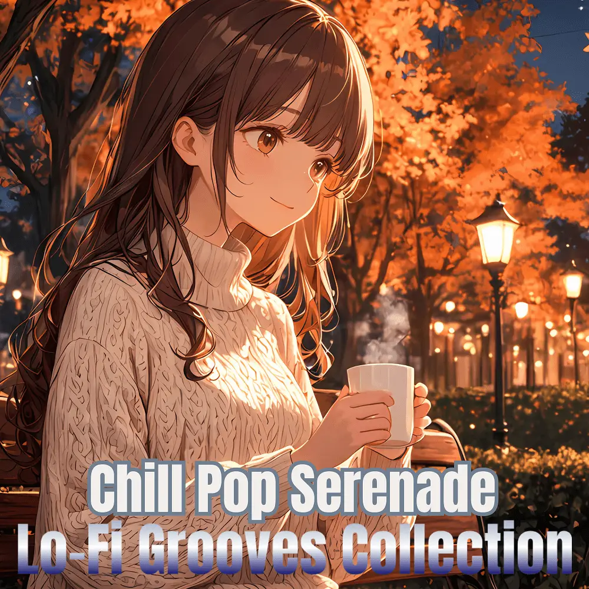

Chill Pop · Lo-Fi · Instrumental
Chill Pop Serenade: Lo-Fi Grooves Collection
Nanashino-chan
Explore Chill Pop Serenade: Lo-Fi Grooves Collection by Nanashino-chan: 22 instrumental tracks spanning Chill Pop / Lo-Fi / Instrumental. Start with Serenade Sunset / Mellow Waves, preview the collection and find your favorites on streaming services.
2025-03-24 · Released · 22 tracks · Instrumental
Preview the album
The jacket stays here until you choose a track. Playback uses YouTube.
YOUTUBE PREVIEW
Choose a track to listen
The jacket stays here until you choose a track. Playback uses YouTube.
If playback is unavailable, open the album or track on the streaming service.
Find this album on streaming services
Links marked “search” open search results. Select the album or track on the service.
Track list 22
- 01Serenade Sunset
- 02Mellow Waves
- 03Soft Echoes
- 04Golden Vibes
- 05Breezy Reflections
- 06Midday Dream
- 07Whispers of Light
- 08Horizon Glow
- 09Gentle Breeze
- 10Floating on Clouds
- 11Warm Sunset
- 12Tranquil Moments
- 13Soft Lights
- 14Serene Journey
- 15Evening Calm
- 16Sublime Serenity
- 17Quiet Reflections
- 18Dusk's Glow
- 19Nightfall Bliss
- 20Peaceful Whispers
- 21Moonlit Serenade
- 22Dreamy Horizon
Find a sound for your next post
Copy “Nanashino-chan + track title” and paste it into your social app’s music search. Availability depends on your region and account. Copying the name does not grant usage rights.